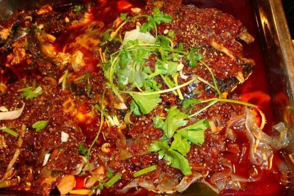

---簋街的餐饮格局是一个哑铃形状，两头大中间小，最火的餐馆在东西两端。簋街东西两头的饭馆开一家火一家，中段却比较冷清。
右边这是霸王鸡.
---簋街的招牌和特色菜--麻小儿(麻辣小龙虾) and 香辣蟹。当然，簋街的特色菜还有羊蝎子、红焖羊肉等……有没有很想吃呢。反正我是馋了……
---馋嘴蛙和重庆烤鱼。天啦噜我都喜欢吃的啊啊啊……
---水煮鱼和……

本宝宝还没有去过北京，不能感受我大北京的历史文化和风俗的熏陶，希望以后有机会去瞻仰wuli首都(^_^)